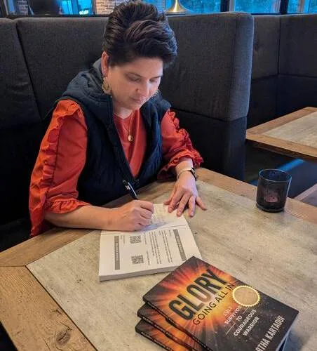

Martha’s ability to create a safe space and allow for healing and sharing was nothing short of amazing. I began a deeper healing than I knew possible.A.W. · Workshop attendee
Cult survivor · Author · Speaker · Facilitator
Your past is part
of your story.
It is not your ending.
Martha Glory Kartaoui walks alongside survivors, freedom-seekers, and purpose-driven communities as they reclaim identity, reconnect with hope, and rise into a life that feels fully their own.
Trauma-XUnboundGlory: Going All In
One mission · many ways to enter
A connected home for healing,
community, and purpose.
Martha’s story, programs, events, resources, and speaking work now live together—so you can understand the whole movement and choose the support that fits.
01
Work With Martha
Keynotes, trauma-informed workshops, group coaching, retreats, panels, and facilitated conversations.
Explore her work → 02Trauma-X
A safe, uplifting healing community for survivors and “Battle Angels” reconnecting with mind, body, spirit, and identity.
Enter Trauma-X → 03Unbound
An immersive movement of healing, faith, freedom, live events, and year-round community connection.
Discover Unbound →Why this work
“You don’t heal in isolation.
You heal in community.”
Martha knows what it means to rebuild a life after control, secrecy, and trauma.
After escaping a cult at 25, she began the long work of reclaiming identity, safety, self-worth, and faith. Her lived experience now meets professional training as a certified life, health, and spiritual coach and trauma-informed event facilitator.
Her spaces are candid, compassionate, spiritually open, and grounded in a simple truth: healing is a journey, not a destination—and no one should have to walk it alone.
Read Martha’s story →
Amazon bestselling memoir
GLORY:
Going All In
Cult Survivor to Courageous Warrior
Martha’s deeply personal story traces the road from oppression and silence to self-worth, healing, and purpose.
Weekly show · Thursdays at 7 PM Eastern
LET GLORY SHINE:
The Power Within Ascends
Real stories. Healing wisdom. Fierce truth wrapped in love and spiritual depth.
Hosted by Martha, this weekly show helps trauma survivors feel seen, find practical tools, reconnect with community, and transform pain into purpose.
4Trauma-X healing pillars
3 daysUnbound NC 2026
4Free healing resources
1Connected movement
What people experience
Spaces where people feel
safe, seen, and supported.
I walked into Unbound carrying pieces of myself I had kept hidden. I left lighter, braver, and whole.Joyce B. · Unbound attendee
It’s been life changing getting to work with Martha. She meets you where you are and becomes your biggest cheerleader.Alex N. · Coaching client